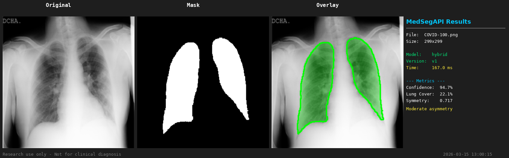

01 / Independent research & development
MedSegAPI
From a thesis to working software.
A lung-segmentation model, an API, deployment, and monitoring. An end-to-end exercise in turning research into something usable.
Explore the repository
My contributionModel experiments, serving API & monitoring
Built withPyTorch · FastAPI · Docker · GitHub Actions
What I built & learned
I explored how local image features and global context work together in a hybrid CNN–ViT model, then built the serving layer with logging, monitoring, and automated deployment.
The Montgomery + Shenzhen adaptive-hybrid experiment reported 96.65% Dice. Testing dataset shifts and model variants taught me why a benchmark alone cannot establish real-world reliability.